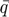
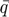
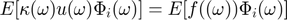
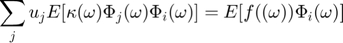
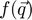
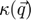
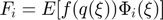
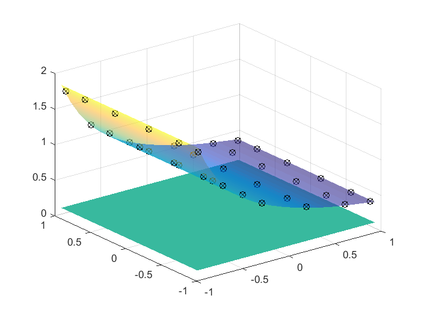
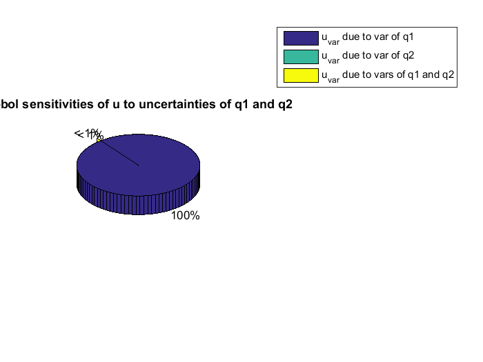

Toy example of the stochastic Galerkin method
Contents
- Introduction
- 1. Define source term and kappa dependencies on the uncertain inputs q
- 2. Define distribution of uncertain input parameters
- 3. Define integration rule
- 4. Setup the points with Gauss-points
- 5. Solve the equation with the Stochastic Galerkin approach
- 6. Evaluate statistics of u, and plot response surface
Introduction
Solve the equation:

with Stochastic Galerkin method
where  is some function depending on uncertain inputs,
is some function depending on uncertain inputs,  is the unknown response (we want to get statistics of) and
is the unknown response (we want to get statistics of) and  is a source term that is also depending on the uncertain inputs .
is a source term that is also depending on the uncertain inputs .

Galerkin projection:

![$$E[\kappa(\omega)\sum_j u_j \Phi_j(\omega)\Phi_i(\omega)]=E[f((\omega))\Phi_i(\omega)]$$](./stochastic_Galerkin_method_files/Stochastic_Galerkin_eq09245424461664433450.png)

![$$Au=F \quad A_{ij}=E[\kappa(\omega)\Phi_j(\omega)\Phi_i(\omega)] \quad
F=E[f((\omega))\Phi_i(\omega)]$$](./stochastic_Galerkin_method_files/Stochastic_Galerkin_eq07460870862893575017.png)
The Algorithm:
- Define  and 
- Define distributions of

- Set approximating spaces for
- Get integration rule
- Solve the equation with stochastic Galerkin method
- Setup the matrix
![$A_{ij}=E[\kappa(q(\xi))\phi_i(\xi)\phi_j(\xi)]$](./stochastic_Galerkin_method_files/Stochastic_Galerkin_eq12224609699198535622.png)
- Compute the r.h.s: 
- Solve for the coefficients

6. Evaluate statistics of u, and plot response surface
1. Define source term and kappa dependencies on the uncertain inputs q
f_func=@(q)(1); % For the first trial let f=1 (without any uncertain inputs) kappa_func=@(q)(q(1)); % For the first trial let kappa be the first random parameter % like that the true response surface should be u(kappa)=1/kappa
2. Define distribution of uncertain input parameters
% Initiate SimParamSet Q=SimParamSet(); % Add parameters q1 and q2 to the set Q.add(SimParameter('q1', UniformDistribution(0.5,2.5))); Q.add(SimParameter('q2', UniformDistribution(3,4)));
3. Define integration rule
% Define approximating subspace V=Q.get_germ; p_gpc=5; V_u=gpcbasis_modify(V,'p', p_gpc, 'full_tensor', false); % Number of basis funcions: M=gpcbasis_size(V_u,1);
4. Setup the points with Gauss-points
%p_int=[4;6]; %different degrees for the dimensions are allowed only for %[p,w]=gpc_integrate([], V, p_gpc+1, 'grid', 'full_tensor'); % with full tensor grid: p_int= p_gpc+1; [xi,w]=gpc_integrate([], V, p_int, 'grid', 'full_tensor'); N=length(w);
5. Solve the equation with the Stochastic Galerkin approach
Prelocate memory for A and F
A=zeros(M,M); F=zeros(M,1); % for k=1: N %loop over the integration points %kth integration point xi_k=xi(:,k); %corresponding weight w_k=w(k); % map germ (xi) to the parameter (q) q_k=Q.germ2params(xi_k); % evaluate basis functions at the integration point Phi_i_k=gpcbasis_evaluate(V_u, xi_k); % Calculate A A=A + kappa_func(q_k)*(Phi_i_k*Phi_i_k')*w_k; % Evalueate the right hand side F F=F+f_func(q_k)*Phi_i_k*w_k; end % 5.3. Solve for the coefficients $A u_\alpha=F$ u_alpha=(A\F)';
6. Evaluate statistics of u, and plot response surface
% Plot response surface and interpolation points plot_response_surface(u_alpha, V_u) % Evaluate proxi model at the integration points u=gpc_evaluate(u_alpha, V_u, xi); % Plot proxi at regression point hold on; plot3(xi(1,:), xi(2,:), u(1,:)+0.001, 'kx'); hold off; % Plot true solution at regression point q=Q.germ2params(xi); hold on; plot3(xi(1,:), xi(2,:), 1./q(1,:)+0.001, 'ko'); hold off; % Compute mean and variance of $u_p$: [u_mean, u_var]=gpc_moments(u_alpha, V_u); % Compute sensitivity of $u$ to the uncertainties of $k$ and $m$: [u_part_vars, I, sobol_index]=gpc_sobol_partial_vars(u_alpha, V_u) % Plot Sobol-sensitivities figure labels={'u_{var} due to var of q1', 'u_{var} due to var of q2', 'u_{var} due to vars of q1 and q2'}; pie3(sobol_index(1,:),[0,0,1]) legend(labels) title('Sobol sensitivities of u to uncertainties of q1 and q2')
u_part_vars =
0.1523 0.0000 0.0000
I =
1 0
0 1
1 1
sobol_index =
1.0000 0.0000 0.0000
 